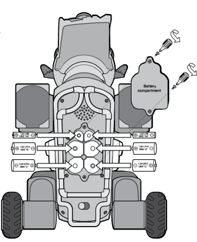
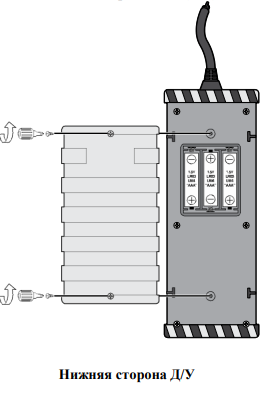

ВКЛЮЧЕНИЕ И АКТИВАЦИЯ
Робот-собака активируется специальным жестом. Пользователь должен активировать собаку одновременным косанием носа и правого уха. Система запускается в течение 10 секунд.
Световой индикатор загорается синим цветом. Глаза робота начинают плавно светиться. Механизмы приводятся в рабочее состояние.
Вы будете знать что батарея исчерпана, когда робот собака будет двигаться очень медленно или становится менее чувсвительной к вашим командам и/или командам дистанционного управления.
БАЗОВЫЕ КОМАНДЫ УПРАВЛЕНИЯ
Управление с помощью пульта:
Кнопка "Вперед" заставляет собаку двигаться прямо. Джойстик контролирует направление движения. Триггеры регулируют скорость перемещения.
Красная кнопка переводит собаку в положение "сидеть". Зеленая кнопка активирует команду "лежать". Синяя кнопка возвращает собаку в стоячее положение.
Управление с клавиатуры:
Клавиша "W" запускает движение вперед. Клавиша "S" активирует движение назад. Клавиши "A" и "D" поворачивают собаку влево и вправо.
Клавиша "Space" переводит собаку в режим сидения. Клавиша "C" укладывает собаку на пол. Клавиша "X" поднимает собаку в стоячее положение.
РЕЖИМЫ РАБОТЫ
Робот поддерживает автономный режим. Система следует за владельцем самостоятельно. Алгоритмы обеспечивают безопасное передвижение.
Собака имеет режим охраны. Сенсоры отслеживают движение в помещении. Система оповещает владельца о нарушениях.
РЕЖИМЫ РАБОТЫ
Глаза робота отображают текущий заряд. Глаза робота сломались не отображают они заряд больше.
Уши передают эмоциональное состояние. Положение ушей зависит от режима работы. Движения имитируют поведение живой собаки.
ТЕХНИЧЕСКОЕ ОБСЛУЖИВАНИЕ
Владелец должен регулярно очищать сенсоры. Система требует ежемесячной калибровки. Обновления устанавливаются автоматически.
Аккумулятор заряжается беспроводным способом. Зарядка занимает четыре часа. Полный заряд обеспечивает сутки работы.
АВАРИЙНЫЕ СИТУАЦИИ
Тройное касание носа перезагружает систему. Длительное удержание уха выключает робота. Резервное питание активируется автоматически.
Система сохраняет последние настройки. Робот восстанавливает работу после сбоя. Данные передаются в сервисный центр.
ПЕРСОНАЛИЗАЦИЯ
Владелец может настроить характер собаки. Система запоминает предпочтения пользователя. Алгоритмы адаптируются под привычки хозяина.
Голосовые команды программируются индивидуально. Робот учится распознавать членов семьи. Поведение настраивается под каждого пользователя.
ОГРАНИЧЕНИЯ
Система не работает при экстремальных температурах. Робот избегает контакта с водой. Конструкция требует бережного обращения.
ГАРАНТИЙНЫЕ ОБЯЗАТЕЛЬСТВА
Производитель обеспечивает годовую гарантию. Сервисный центр выполняет ремонт. Программное обеспечение обновляется бесплатно.
РЕГУЛИРОВКА ГРОМКОСТИ
У робот собаки есть 3 уровня громкости: низкая, средняя, высокая.
Громкость изменяется переключением на дистанционном управлении кнопку громкость к желаемому уровню.
КОМАНДЫ И УПРАВЛЕНИЕ
Робот выполняет команды пользователя быстро и точно. Он реагирует на действия владельца через сенсоры и жесты. Система настроена для выполнения нескольких команд одновременно.
ПИТАНИЕ И ЭНЕРГИЯ
Аккумулятор заряжается быстро и эффективно. Он может работать до 12 часов без подзарядки. Владелец всегда может проверить уровень заряда через приложение.
ПОСЛЕПРОДАЖНОЕ ОБСЛУЖИВАНИЕ
Сервисный центр работает круглосуточно. Он предлагает бесплатный ремонт в течение года после покупки. Специалисты проводят диагностику и замену поврежденных частей робота.
СЕНСОРЫ И ИНТЕРАКЦИЯ
Робот использует сенсоры для выявления объектов. Он распознает преграды и корректирует движение. Все данные передаются в систему для анализа.
НАСТРОЙКИ И ПЕРСОНАЛИЗАЦИЯ
Владелец может настроить поведение робота. Он выбирает предпочтительные команды и реакции. Алгоритмы системы адаптируются к индивидуальным предпочтениям.
РАБОТА В ОЖИДАНИИ
Робот может оставаться в режиме ожидания. Он реагирует на окружающие звуки и движения. Когда система активируется, он быстро переключается в рабочий режим.
СИСТЕМА ОПОВЕЩЕНИЙ
Робот может оповещать владельца о событиях. Он использует звуковые сигналы и визуальные индикаторы. Все уведомления отображаются на экране мобильного приложения.
РЕЖИМ БЕЗОПАСНОСТИ
Робот автоматически включает режим безопасности. Он блокирует доступ к чувствительным данным и настройкам. Все действия пользователя фиксируются и записываются.
КОММУНИКАЦИЯ С СОБАКОЙ
Робот реагирует на голосовые команды владельца. Он может выполнять базовые команды и жесты. Система анализирует эмоции хозяина и подстраивает поведение.